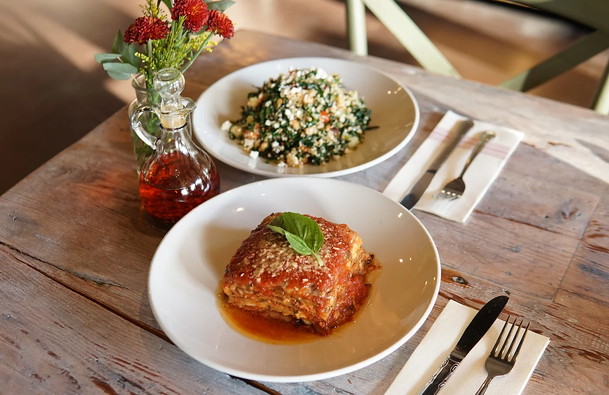

Lasagna

Tell Me More!
While many of us think that lasagna pasta came from Italy, there are people who would argue that lasagna originated in Greece or England. Anyway, the lasagna that we know today appeared in the Italian city of Naples during the Middle Ages.
The traditional lasagna recipe that was codified is the classic version of Bolognese cuisine. The lasagna alla bolognese consists of layers of thin pasta dough made with flour, egg, and spinach. There are ragù sauce and béchamel between each layer. Parmigiano-Reggiano cheese is lightly sprinkled on the top layer. The dish is baked to perfection!
So What's Lasagna Made Of?
Meat Sauce
- 4 Tbsp extra virgin olive oil
- 3 or 4 cloves of garlic
- 2 Tbsp chopped fresh parsley
- 1 lb ground beef
- Approximately 42 oz Italian tomato purée (passata) or whole tomatoes, puréed (the very best choice is San Marzano dell’Agro Sarnese-Nocerino, DOP)
- Kosher or sea salt
- pepper
- fresh basil
Bechamel Sauce
- 3 oz butter
- 4 oz flour
- 24 oz warm milk, whole is best
- dash of nutmeg
- Kosher or sea salt
- white pepper
Other Ingredients
- 1 lb lasagna noodles or sheets (use pasta from Italy, or homemade, for best results)
- 10 oz shredded mozzarella cheese (whole milk, low moisture) I recommend shredding your own cheese or you can also use fresh mozzarella, cut into small pieces
- 2 Tbsp grated Parmigiano Reggiano cheese to sprinkle on top
Hey Chef, Time To Cook!
- Set Oven Temp: Oven temperature: 400˚ F (200˚ C)
- Make The Meat Sauce
- Make the Bechamel Sauce (While the sauce is simmering )
- Cook the Noodles (Don't you dare use no-cook lasagna noodles!
- Assemble the Lasagna!
- Bake the Lasagna
- Serve!